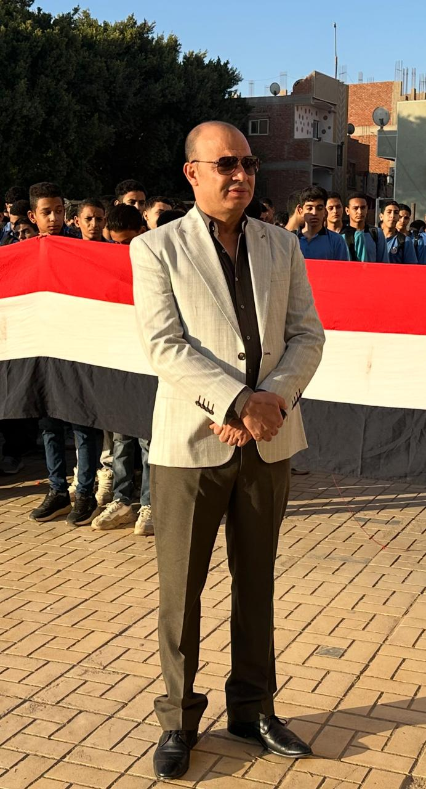
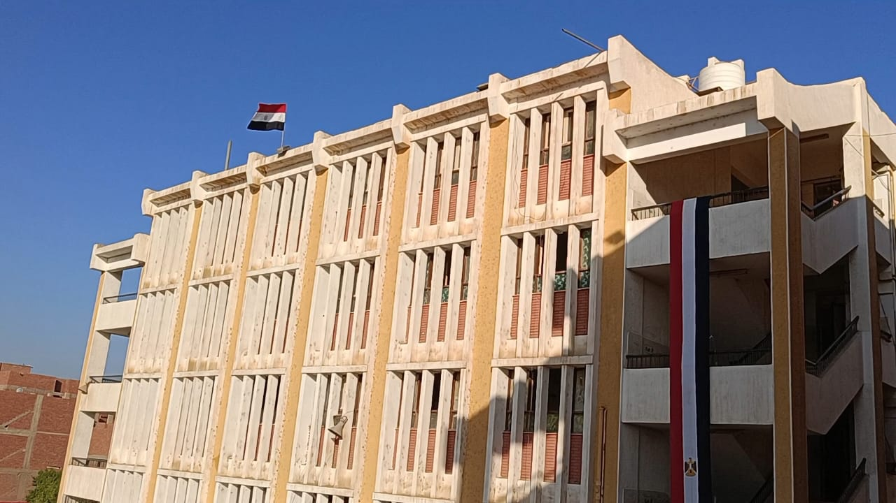
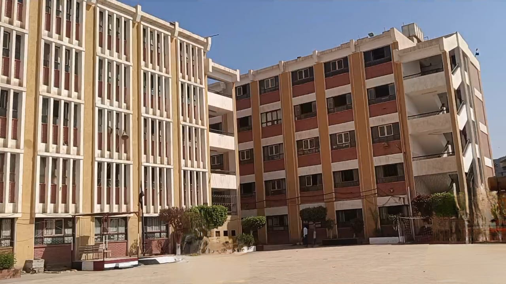
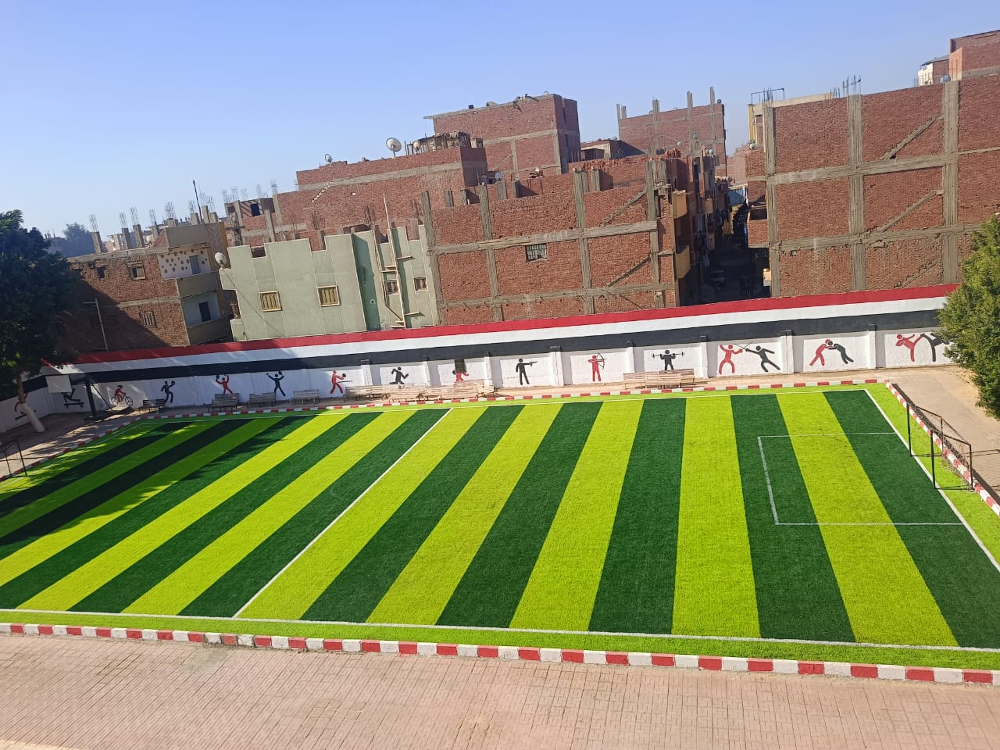

كلمة مدير المدرسة
كلمة إدارة المدرسة..
نرحب بأبنائنا الطلاب، والسادة أولياء الأمور الكرام في رحاب مدرسة بني مزار الثانوية الجديدة بنين (شرق المحطة).. هذا الصرح التربوي الذي نفخر بانتمائنا إليه، ونسعى في كل يوم دراسي يبدأ بتحية علم مصر أن نغرس في نفوس أبنائنا قيم الجدية، الانضباط، والتفوق العلمي والأخلاقي.
تفتح إدارة المدرسة أبوابها دوماً للتواصل البناء مع الطلاب وأولياء الأمور، وتعمل بتكاتف كامل مع السادة الوكلاء وكبار المعلمين لتوفير بيئة تعليمية ورياضية تليق بأبناء مركز بني مزار وتؤهلهم لكبرى الكليات الجامعية.

ماذا عن مدرسة بني مزار الثانوية الجديدة بنين؟
قلعة التعليم الثانوي العام للبنين بشرق المحطة
تابعة لإدارة بني مزار التعليمية — مديرية التربية والتعليم بمحافظة المنياتُعد مدرسة بني مزار الثانوية الجديدة بنين واحدة من أعرق وأهم المؤسسات التعليمية الثانوية بشمال محافظة المنيا. وبفضل أعمال التطوير ورفع الكفاءة الحديثة، تجمع المدرسة اليوم بين الأصالة المعمارية لمبانيها الدراسية وتكامل مرافقها التربوية والرياضية.
التفوق العلمي والأكاديمي
رعاية متكاملة لطلاب الشعبتين العلمية (علوم ورياضة) والأدبية ومعامل مجهزة للتطبيق العملي.
الانضباط والانتماء الوطني
اصطفاف صباحي منتظم، إذاعة مدرسية هادفة، وترسيخ قيم الاحترام المتبادل والقدوة الحسنة.
بناء الشخصية والنشاط الرياضي
ملعب خماسي حديث بالنجيل الصناعي وجداريات أولمبية لاحتضان البطولات المدرسية والمواهب.


هيئة التدريس وتدرج المعلمين
أحدث المنشورات من صفحة المدرسة على فيسبوك
آخر منشورات صفحة المدرسة الرسمية
يتم سحب الأخبار والبيانات تلقائياً من صفحة فيسبوك المعتمدة للمدرسةأعظم اللحظات البارزة في المدرسة
الاصطفاف الصباحي المهيب في فناء المدرسة
مئات الطلاب في صفوف منتظمة كل صباح بحضور إدارة المدرسة وهيئة التدريس (اضغط للتكبير).
القيادة المدرسية وسط الطلاب
تلاحم تربوي ووطني خلف علم جمهورية مصر العربية.

الطفرة الرياضيةالملعب الخماسي النجيل الصناعي
ملعب قانوني مطور تحيط به جدارية الألعاب الأولمبية بألوان علم مصر.
واجهة المدرسة تتزين بعلم مصر
المبنى الرئيسي للصرح التعليمي بمنطقة شرق المحطة ببني مزار.
تكامل الأجنحة الدراسية والفناء
مبانٍ فسيحة توفر التهوية والإضاءة المثالية للفصول والمعامل.
موقع المدرسة وتواصل معنا
مدرسة بني مزار الثانوية الجديدة بنين
شرق المحطة — مركز ومدينة بني مزار — محافظة المنيامحافظة المنيا — مدينة بني مزار — منطقة شرق المحطة (بالقرب من محطة قطار بني مزار).
الأحد إلى الخميس — يبدأ الاصطفاف الصباحي الساعة 7:30 صباحاً حتى نهاية اليوم الدراسي.
مديرية التربية والتعليم بالمنيا — إدارة بني مزار التعليمية — التعليم الثانوي العام.